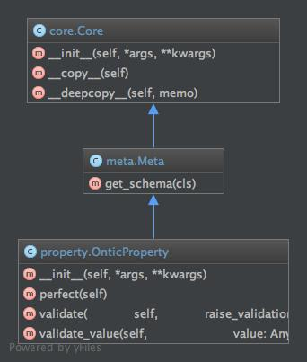

Property Module¶
The base class for deriving types that require schema support.
Contents
Usage¶
The meta_type module contains three classes that are used in the
definition and instantiation of object instances. The root class is
CoreType, which is derived from the Python dict. The
primary feature of the CoreType is provide the means to access
properties of an object as a dict key or as object attribute.
Derived from CoreType is MetaType, which provides the
interface for retrieving a schema from an object schema definition via the
MetaType.get_schema().
The PropertySchema is utilized to define a schema for a single
property. This includes setting data type, required, and other such common
schema definition conventions. See Available Property Schema Settings for
details on the PropertySchema settings available.
It would be a rare case that requires the use of CoreType or
MetaType. For the majority of cases, the use of
PropertySchema is sufficient. With that in mind, the remainder of
this section will focus on the use of PropertySchema
Creating Property Schema¶
For general purposes, consider utilizing ontic.schema_type.SchemaType,
for defining complete models. However, if you need validators for individual
properties, then direct use of PropertySchema is a solution.
There are a number of ways to create a PropertySchema. Take a look
at PropertySchema class documentation for a complete exposition on
the means of instantiating an instance.
The most straight forward way to create an instance of a
PropertySchema:
>>> prop_schema = OnticProperty(name='x', type='str', required=True, min=3)
>>> assert prop_schema == {'regex': None, 'enum': None, 'min': 3, 'default': None, 'max': None,
... 'required': True, 'member_type': None, 'member_min': None,
... 'type': str, 'member_max': None, 'name': 'x'}
Demonstrated above is the creation of a property schema of type string. In addition the property schema forces the value of the property to required and of minimum length of 3.
Along with the schema settings explicitly set in the constructor, there are a number of other property schema settings that may be utilized. These additional settings can be viewed in the output of the prop_schema object. For the details on the property schema settings, see Available Property Schema Settings.
A PropertySchema can be created or modified dynamically. If done so,
then the final schema instance should be validated with the use of the method
validate_property_schema().
Utilizing Property Schema¶
Validation of a value utilizing the prop_schema created, is done with the
validate_value() method.
>>> prop_schema = OnticProperty(name='some_prop', type='str', required=True)
>>> some_value = 'The cat is on the roof.'
>>> prop_schema.validate_value(value=some_value)
[]
validate_value returns an empty list if there are no errors.
The name parameter of the validate_value(), is used to construct
friendly error messages. For example:
>>> meta.validate_value(prop_schema, None)
['The value for "some_prop" is required.']
The following example demonstrates how a PropertySchema being
instantiated with a dictionary. Subsequently a bad value is passed with
multiple validation errors.
>>> other_schema = OnticProperty({
... 'name': 'other_prop',
... 'type': 'str',
... 'max': 3,
... 'enum': {'fish', 'dog', 'cat'}
... })
>>> ret = other_schema.validate_value('frog')
>>> assert len(ret) == 2
>>> assert ret[0] == '''The value "frog" for "other_prop" not in enumeration ['cat', 'dog', 'fish'].'''
>>> assert ret[1] == '''The value of "frog" for "other_prop" fails max of 3.'''
Available Property Schema Settings¶
The following table gives a listing of the property schema settings that can be used to define properties. Details on the schema settings are provided after the table.
Name |
Type |
Default |
Required |
Enumeration |
|---|---|---|---|---|
type |
str type |
None |
False |
bool, complex, date, datetime, dict, float, int, list, None, set, str, time |
default |
None |
None |
False |
|
required |
bool |
False |
False |
|
enum |
set |
None |
False |
|
min |
complex date datetime float int time |
None |
False |
|
max |
complex date datetime float int time |
None |
False |
|
regex |
str |
None |
False |
|
member_type |
str type |
None |
False |
bool, complex, date, datetime, dict, float, int, list, None, set, str, time |
member_min |
complex date datetime float int time |
None |
False |
|
member_max |
complex date datetime float int time |
None |
False |
- type
The type settings restricts a property to a known type. If no type is defined, then any value type may be assigned to the property.
The type definition can be by type or by string name. Both
{type=int}and{type='int'}are valid examples of type declaration.- default
If no default is applied, then the default value will be
None. If a default value is supplied, it will only be applied under two conditions. A default value is applied during instantiation of an object of typePropertySchema,SchemaType, orOnticType. The other case is when an instance of on of the given types is perfected via the methodsperfect_property_schema(),perfect_schema(), orperfect_object().The default is not applied during validation.
For the collection types (dict, list, and set), the default value is deep copied. This is done to ensure that there is no sharing of collection instances or values.
- required
A PropertySchema with a required setting of True, will fail validation if the property value is None.
- enum
An enum setting is a set of values that the property value must adhere to. If the type setting is provided, then the choices provided by enum must be of that type. If no type is provided, then the choices in the enum set may be of any type, even mixed type.
- min
The min setting has differing behavior, based on the type setting. If no type setting is provided, then min test will not occur. For the boundable types (strings and collections) the min setting will test that the value length is not less than the minimum. For the comparable types (numeric and chronological) the min setting will test that the value is not less than the minimum.
- max
The max setting has differing behavior, based on the *type setting. If no type setting is provided, the max test will not occur. For the boundable types (strings and collections) the max setting will test that the value length is not more than the maximum. For the comparable types (numeric and chronological) the max setting will test that the value is not more than the maximum.
- regex
The regex setting is only tested if the type or member_type setting is ‘str’ and the regex setting is not None. When active, the regex setting will be used to test the given string value. If the property value is ‘None’, then no regex testing will be done.
- member_type
The member_type setting is used to restrict the value type for property type ‘list’ or ‘set’. It does so ensuring that each member of the collection is of the type designated by member_type.
The type definition can be by type or by string name. Both
{member_type=int}and{member_type='int'}are valid examples of type declaration.- member_min
The member_min setting has differing behavior, based on the member_type setting. If no member_type setting is provided, then member_min test will not occur. For the boundable types (strings and collections), the member_min setting will test that the value length is not less than the minimum. For the comparable types (numeric and chronological) the member_minimum setting will test that the value is not less than the minimum.
- member_max
The member_max setting has differing behavior, based on the member_max setting. If no member_type setting is provided, then member_max test will not occur. For the boundable types (strings and collections), the member_max setting will test that the value length is not more than the maximum. For the comparable types (numeric and chronological) the member_max setting will test that the value is not more than the maximum.
Classes¶
OnticProperty¶
- class ontic.property.OnticProperty(*args, **kwargs)¶
A class to define a schema for a property.
- __init__(*args, **kwargs)¶
- perfect() NoReturn¶
Method to ensure the completeness of a given schema property.
- Return type
None
- Raises
ValueError – If the candidate_property_type is None, or not of type OnticProperty.
- validate(raise_validation_exception: bool = True)¶
Method to validate a property schema definition.
- Parameters
raise_validation_exception – If True, then validate_property_type will throw a ValueException upon validation failure. If False, then a list of validation errors is returned. Defaults to True.
- Returns
If no validation errors are found, then None is returned. If validation fails, then a list of the errors is returned if the raise_validation_exception is set to True.
- Raises
ValueError – the_candidate_schema_property is not an
OnticProperty.ValidationException – A property of candidate_property_type does not meet schema requirements.
- validate_value(value: Any, raise_validation_exception: bool = False) NoReturn¶
Method that validates a value against the current schema.
Functions¶
perfect_property¶
- ontic.property.perfect_property(ontic_property: ontic.property.OnticProperty) NoReturn¶
Method to ensure the completeness of a given schema property.
This method ensures completeness by stripping out any properties that are not defined by the schema definition. In addition, for any schema properties that are not included, the method will add those properties to the default value.
- Parameters
ontic_property (
OnticProperty) – The OnticProperty that is to be clean and restricted.- Return type
None
- Raises
ValueError – If the ontic_property is None, or not of type OnticProperty.
validate_property¶
- ontic.property.validate_property(ontic_property: ontic.property.OnticProperty, raise_validation_exception: bool = True)¶
Method to validate a property schema definition.
- Parameters
ontic_property – The schema property to be validated.
raise_validation_exception – If True, then validate_property_type will throw a ValueException upon validation failure. If False, then a list of validation errors is returned. Defaults to True.
- Returns
If no validation errors are found, then None is returned. If validation fails, then a list of the errors is returned if the raise_validation_exception is set to True.
- Raises
ValueError – the_candidate_schema_property is not an
OnticType.ValidationException – A property of ontic_property does not meet schema requirements.